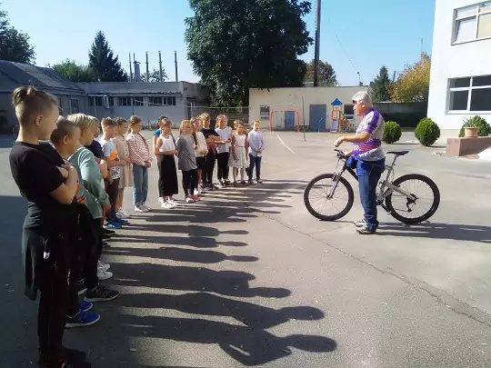

Велоклуб «ЛІДЕР»
Опис:
Це ужгородський міський велоцентр, який об'єднує в собі всіх охочих до заняття велосипедним
спортом як то шосе, крос-кантрі та інші напрямки. Безпосередньо, це громадська організація,
яка базується в Ужгороді і підтримує місцевих спортсменів.
Також проводиться набір у дитячу секцію велоспорту для дітей віком від 10 років, проводить
літні велоканікули та надає послуги по прокату велосипедів.
Читати більше...

Велошкола:
У рамках відзначення Дня фізичної культури та спорту в Україні та Європейського тижня
мобільності велоклуб «Лідер» спільно з Комплексною обласною ДЮСШ «Спартак» реалізували
програму «Вело-Школа».
Галерея